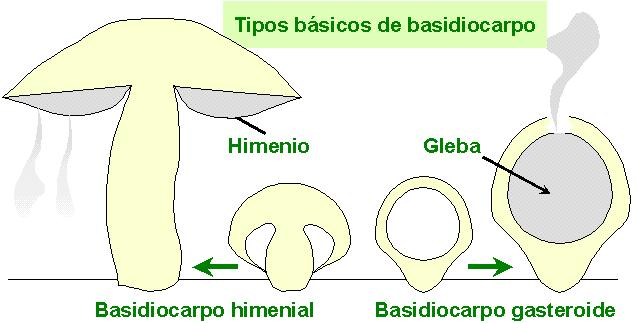
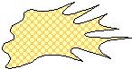
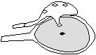
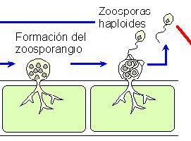
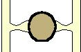
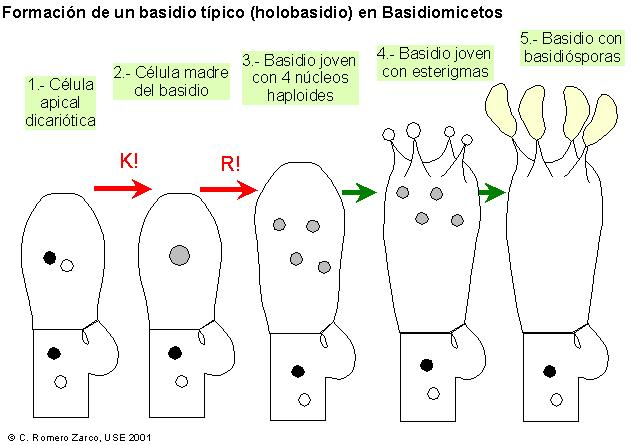
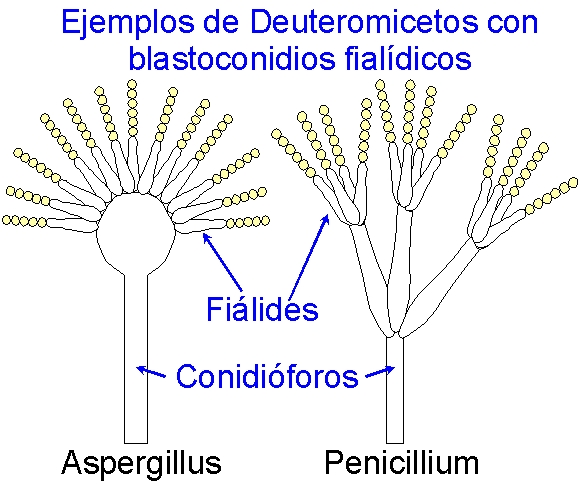

Conceptos
básicos. Morfología y estructura. Fisiología básica de
los hongos. Reproducción. Ciclo biológico.
Clasificación. Filogenia.

Caracteres comunes del grupo. Clasificación. Ejemplos y ciclos biológicos de Acrasiomicotas, Mixomicotas y Plasmodioforomicotas

Caracteres
comunes con los hongos filamentosos. Clasificación y
caracteres diferenciales con los Eumycota. Caracteres
generales de la clase Oomicetos. Ejemplos y ciclos de
vida.

Clasificación y caracteres diferenciales de los hongos verdaderos. Clase Quitridiomicetos. Caracteres diferenciales dentro de los hongos verdaderos. Ecología e importancia. Ejemplos y ciclos de vida.

Caracteres diferenciales dentro de los hongos verdaderos. Diversidad, modos de vida, ecología e importancia.

Caracteres generales y reproducción. Ecología e importancia. Diversidad, modos de vida y ejemplos.

Caracteres generales y reproducción. Ecología e importancia. Diversidad, modos de vida y ejemplos.

Caracteres generales y reproducción. Importancia y ejemplos.

Conceptos básicos. Líquenes. Caracteres generales de los líquenes. Ecología e importancia de los líquenes. Clasificación de los líquenes y ejemplos. Micorrizas. Carcaterísticas generales. Tipos de micorrizas y sus componentes. Importancia de las micorrizas.